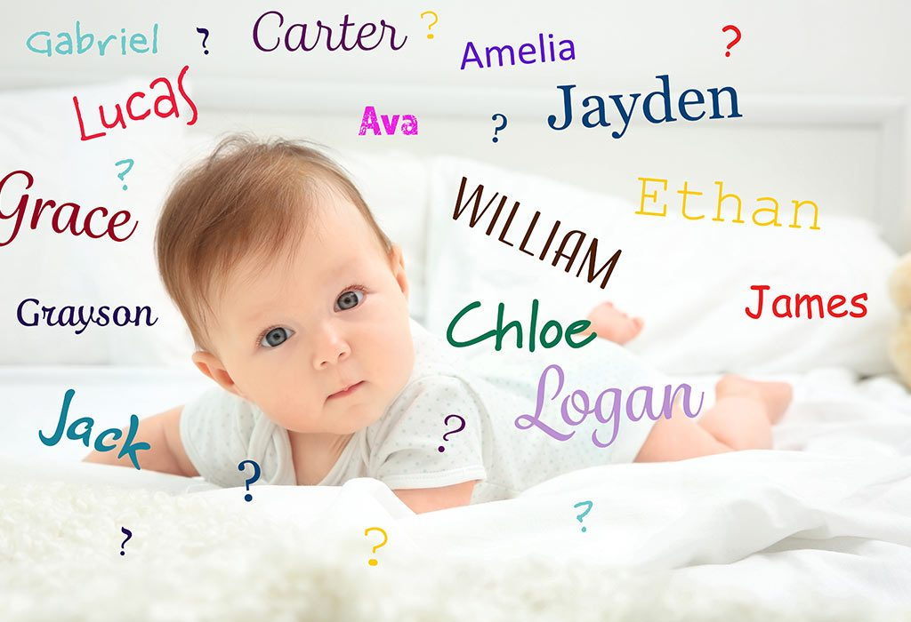

For most people, naming a newborn is a very important decision. A formal religious naming ceremony, announcing a name to family members, and filling out a birth certificate are all examples of "a process of individuation in which a person becomes a separate entity who will ultimately develop a unique personality." (Frank H. Nuessel).
A dataset of New York State baby names was made public in April of this year by the New York State Department of Health. From 2007-2020, the names were compiled and sorted by the year, county, or borough that the mother's address was shown as on a birth certificate from either New York State or New York City.
The name Liam originates from the traditional English name William, which has French and Germanic roots. More specifically, Liam is the product of the Irish, who shortened Ulliam—the Irish translation of William—to its current, beloved stand-alone name. Liam means "guardian."
Certain names rise to popularity because *a lot* of people love them. Popular names reflect cultural references and values that speak deeply to the perspective of the parents who are naming their babies in any given year.
However, as I began to notice hundreds of thousands of different names in each county, I realized that each area of New York appears to have its own little microclimate and culture. Meaning that their differences would be reflected in the diversity of names given to babies born in the state. Founder of "What's in a Baby Name" Taylor Humphrey, explained why this could be the case.
“New York State is a very interesting place when it comes to considering baby names,” Humphrey said. “Ellis Island was the welcoming point for so many who originally came to contribute to the "melting pot" of American Life, bringing with them vast and varied experiences, as well as unique baby names.”
She showed me data from the United States Social Security Administration dating back around 140 years, and it appears that parents are continuing to avoid the top ten names in favor of individuality and celebrating their differences.
So, girls have gone from being given 941 names in a given year, to 17,446 names in a given year. Boys have gone from 1,058 to 14,005. Clearly, the number of names used each year has increased significantly over time for both genders, reflecting greater creativity and diversity in naming.
In New York, the number of names given to ten or fewer children also shows an increasing trend. At the start of the decade, 1,089 names were given to ten or fewer girls, and 931 names were given to ten or fewer boys.
It's important to note that the SSA caps this number to five newborns for privacy reasons, which means that if a name was used for only one baby (or only four kids) in the US, it won't be publicized. So, while these are the official figures, more names are used each year.
Still, his data points to a rising preference in New York State for distinctive and diverse names throughout time, with a decreased reliance on the most popular names and an increase in the variety of names used for both girls and boys.
According to “BabyNames.com” Founder Jennifer Moss, she doesn’t see this trend stopping anytime soon.
“I believe it will become even more diverse, Moss said. “I believe that what we see parents doing, such as their searches on both search engines, is because we track all of the keywords that occur on the search engines. They're still seeking creative names. They are currently seeking names within a specific ethnicity in order to honor their history. And we also find them looking for names from epics like Star Wars or Star Trek, as well as other major pop culture influences.”
Moss also noted how technology has encouraged parents to be more adventurous in their choice of names by making a wider range of names readily available.
“...and the Internet has, the other thing is back before the internet, other than your social circles, people would turn to baby names, books as kind of references and dictionaries,” Moss said. “However, books took two to three years to produce, so by the time they were finally published and someone stood, even the names that were rated in those baby names books may have been 235 years old. Today, knowledge comes to us so swiftly these days. and right away. That, in my view, is having a greater impact on the transition and the speed at which the most popular names are shifting.”
This data confirms the idea that parents are selecting more unique and diverse names for their children than in the past, as indicated by a decrease in the percentage of children with Top 100 names and an increase in the variety of names used.